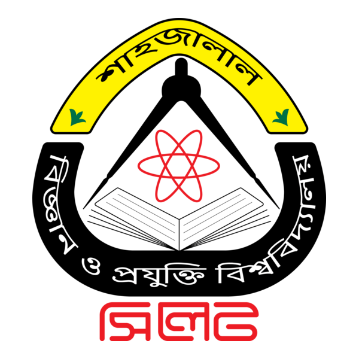

I am a Lecturer in Computer Science and Engineering, Metropolitan University Bangladesh, Sylhet.
🚀 I am actively seeking Ph.D. opportunities to research and develop highly efficient, scalable machine learning architectures for vision, medical AI, high-performance computing, and low-resource models.
I work on machine learning architectures for resource-constrained environments, computational biology, biometric security, and low-resource NLP. My research leverages computer vision, audio processing, and representation learning to build solutions for open-set handwriting biometrics, ECG signal reconstruction, and speech-to-speech voice conversion.
I aim to pursue high-impact research, focusing on low-resource LLM constraints, RAG frameworks, and efficient vision architectures.
I earned my B.Sc. in Computer Science and Engineering with distinction from Shahjalal University of Science and Technology. There, I conducted my undergraduate thesis on constructing parallel accent corpora and Bangla speech-to-speech models under the supervision of Prof. M. Shahidur Rahman.
Backed by a strong foundation in algorithmic efficiency, I am an ICPC Asia West Finalist, a 5-time national hackathon winner, and an active competitive programmer. I plan to apply this computational expertise to high-impact AI research, with the objective of publishing at top-tier venues such as CVPR, NeurIPS, ICML, and ICLR.
My passion is working alongside smart people, engaging in continuous learning, and the ambition to create knowledge that makes a meaningful impact.
News
- Sep 2026Began teaching undergraduate courses in Data Structures, Structured Programming, and Competitive Programming at Metropolitan University Bangladesh.
- Aug 2026Our paper “Investigating the Impact of Fast-Paced Digital Content, Social Media Engagement, and Lifestyle Factors on Attention, Cognitive Load, and Behavioral Impulsivity: A Machine Learning Approach” was published in Brain and Behavior (Wiley). DOI
- Jul 2026Graduated with a B.Sc. in Computer Science and Engineering with distinction🎖️ (CGPA 3.85/4.00, 5th in class) from Shahjalal University of Science and Technology (SUST).
- Jul 2026Defended my undergraduate thesis “Bangla Speech-to-Speech Voice Cloning and Accent Conversion Using a Novel Parallel Accent Corpus”.
- Jul 2026Earned the AWS Certified Solutions Architect – Associate (SAA-C03) certification.
- May 2026Joined the Department of Computer Science & Engineering at Metropolitan University Bangladesh as a Lecturer.
- Apr 2026Secured Runner-Up at the Hackfusion 2026 National Inter-University Hackathon (Team ONTORPONTHIK).
Show older news
- Mar 2026Competed in the ICPC Asia West Continent Final 2026 (Team Fiery_end).
- Dec 2025Our paper “AkkhorRekha: Content Independent Writer Verification System for Bangla Handwriting via Deep Metric Learning” was published and presented at IEEE ICCIT 2025. DOI
- Dec 2025Secured 13th place at the ICPC Asia Dhaka Regional Contest 2025 (Team Fiery_end). Standings
- Nov 2025Crowned Champions at the NEUB ICT Fest 2025 Hackathon with our health-tech platform TikaSheba (Team ONTORPONTHIK).
- Nov 2025Selected for the Innovation World Cup Final 2026 in Indonesia (Team ONTORPONTHIK).
- Nov 2025Secured 18th place at the Inter University Programming Contest - MU CSE Fest 2025 (Team Fiery_end). Standings
- Sep 2025Secured 1st Runner-Up at HackTheAI 2025 (Green University & SmythOS) out of 250+ teams with our LLM toolkit Thryve.
- Jan 2025Secured 2nd Runner-Up at the KUET BITFEST National Hackathon 2025 with EasyBanglish.
- Dec 2024Secured 34th place at the ICPC Asia Dhaka Regional Contest 2024 (Team SUST_Minions). Standings
- May 2024Named Finalist at the Code Samurai 2024 Inter-University Hackathon.
- Mar 2024Secured 28th place at the National Collegiate Programming Contest (NCPC) Onsite 2023 at Jahangirnagar University (Team SUST_tripleA). Standings
- Feb 2024Secured 26th place at the SUST Inter University Programming Contest 2024 (Team SUST_tripleA). Standings
- Nov 2023Joined Invisible Technologies Inc. as an Advanced AI Software Developer.
- Oct 2023Named Finalist at Therap JavaFest 2023 with our Emergency Disaster Management System.
- Sep 2023Secured 11th place at the IIUC Inter University Programming Contest 2023 (Team SUST_Beginners). Standings
- May 2023Secured 1st place at the BAIUST Junior Inter-University Programming Contest 2023 (Team SUST_Demogorgon). Standings
Education
-

Shahjalal University of Science and Technology
CGPA 3.85/4.00 · 5th in class
With Distinction B.Sc. 2026 -
Murari Chand College
GPA 5.00 (Golden)
General Scholarship HSC 2020, Sylhet Division -
Jalalabad Cantonment Public School and College
GPA 5.00 (Golden) · Board stand, 95%+ marks
Talentpool Scholarship SSC 2018, Sylhet Division -
Hazi Inzad Ali High School, Juri, Moulvibazar
GPA 5.00 (Golden)
General Scholarship JSC, Moulvibazar Division -
প্রাথমিক শিক্ষা সমাপনী পরীক্ষা
GPA 5.00
Talentpool Scholarship PSC 2012